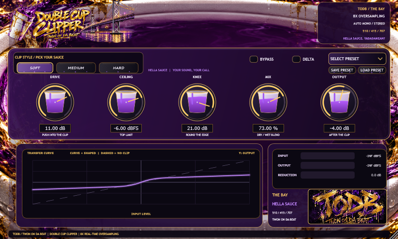

Hella sauce.
Your sound. Your call.
Shape peaks, add character, and keep your drums hitting. Double Cup Clipper is a free VST3 effect from Twon On Da Beat, made with love for the Bay.
See what you’re doing. Hear what changes.

- Soft / Medium / Hard
Choose a rounded or sharper clipping character. Push Drive to hear the effect on peaks.
- Live transfer curve
See how input level becomes output level as you turn the controls.
- 8× oversampling
Processes clipping at a higher sample rate to reduce aliasing. CPU use depends on your session.
- Your presets, saved
Start with a factory preset, then save your own settings for the next beat.
Three steps. Then make it slap.
Download
Get the Windows installer using the button above. It links directly to the official GitHub release. Read the Windows warning note below before running it.
Install
Close your DAW, then run the installer. Windows asks for administrator approval because the plugin goes into the shared VST3 folder.
C:\Program Files\Common Files\VST3\TODB\DOUBLE CUP CLIPPER.vst3
Rescan & load
Open your DAW and rescan VST3 plugins. In FL Studio: Options → Manage plugins → Find installed plugins. Add Double Cup Clipper to a mixer effect slot.
Will it work in my DAW?
The download is a Windows 64-bit VST3 audio effect. It is intended for DAWs that support that format, including FL Studio and other compatible Windows hosts. Not every DAW has been individually verified. It will not load in Logic, a VST2-only host, or a Pro Tools setup requiring AAX.
Where do my presets go?
Use Save Preset and Load Preset inside the plugin. Presets are stored locally in Documents\TODB\Double Cup Clipper\Presets. Your DAW also stores plugin settings with its project.
Start gentle. Dial it by ear.
Drive — push into the clip
Begin with Soft, Mix at 100%, Output at 0 dB and a ceiling just below your incoming peaks. Raise Drive slowly while watching the reduction meter.
Ceiling — where peaks stop rising
A lower ceiling clips more of the signal. This controls the clipping stage; Mix and Output can change the final level afterward. It is not a true-peak limiter.
Knee — round the transition
In Soft and Medium, a wider knee starts rounding earlier. This changes the curve and can lower loudness. Hard uses a sharp boundary, so Knee has no effect in Hard mode.
Mix & Output — finish the sound
Mix blends dry and clipped audio. Use Output to match your bypassed loudness, so louder doesn’t fool your ears into thinking it’s better.
Bypass & Delta — compare
Bypass lets you compare with the unchanged input. Delta lets you hear the difference signal. Turn Delta off to return to the normal processed sound.
Read the curve
The horizontal axis is input; the vertical axis is output. A flatter top means peaks are being clipped. The graph is a level mapping, not a recording of your waveform.
About Windows download warnings
This installer is currently unsigned. Edge or Windows SmartScreen may flag it because it is new or not commonly downloaded. That message is not a malware verdict, and it is not a guarantee of safety either.
Verify the GitHub source and checksum before deciding to install. If Defender identifies a specific threat, stop and report the exact detection on the project’s issue page. Keep your security protections enabled.
Verify the v1.0.4 installer
Compare your downloaded file’s SHA-256 with this published fingerprint. In PowerShell, use Get-FileHash -Algorithm SHA256 followed by the quoted path to your installer. A matching hash verifies the bytes, not whether software is harmless.
d541503f8a81a825be5824a5337229215d6b351d9633941bf7a804ba2e62e6f9Privacy & source code
The plugin has no accounts, telemetry or audio uploads. Audio is processed in memory, and saved presets stay on your computer. The code is available under AGPLv3. This page includes no analytics scripts or signup forms; its hosting provider and GitHub may process normal request information under their own policies.
From the Bay. For the people.
Free to download. Bring your own sound.
Hella sauce. Yadadamean?